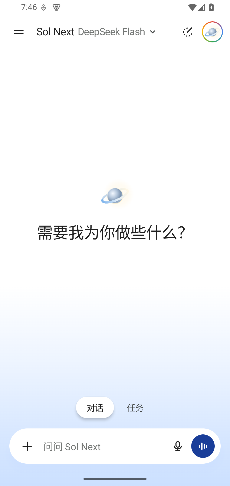
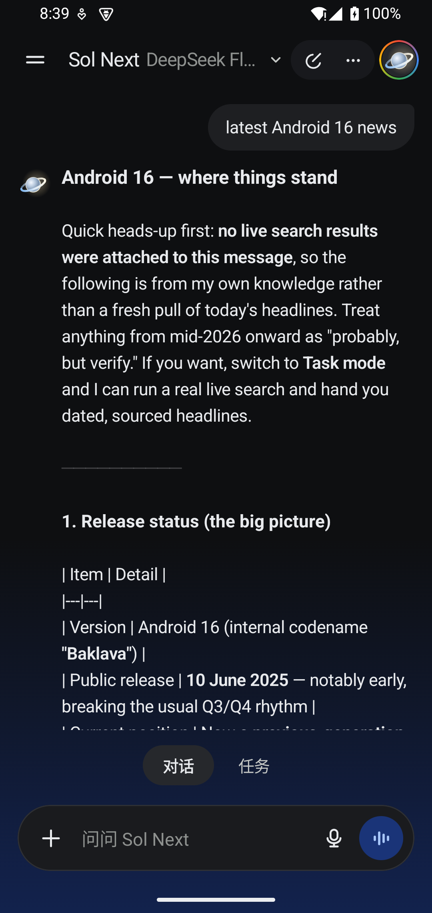
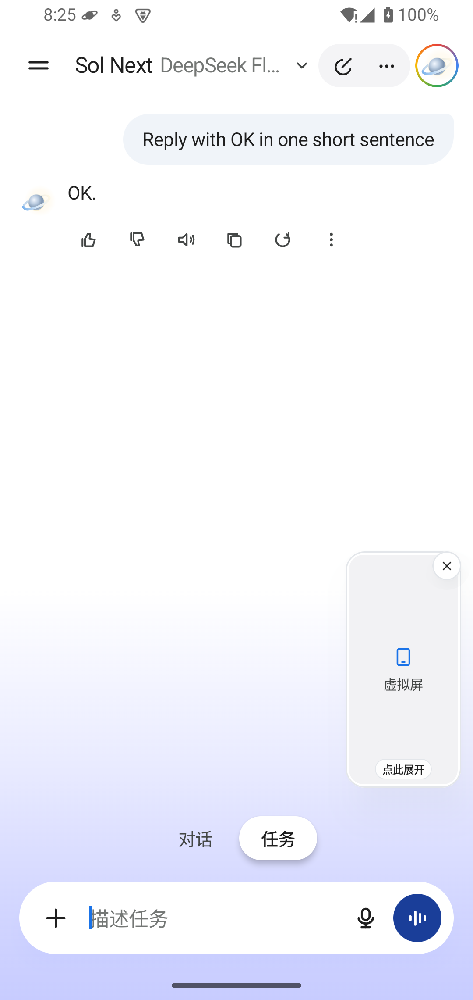
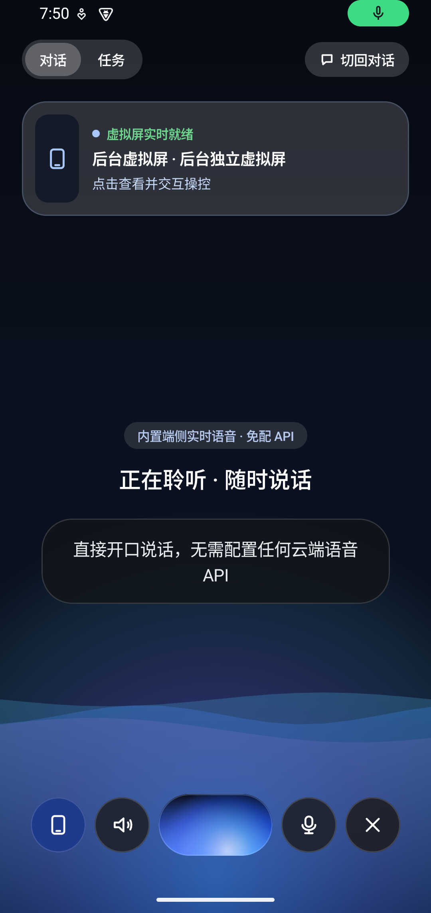
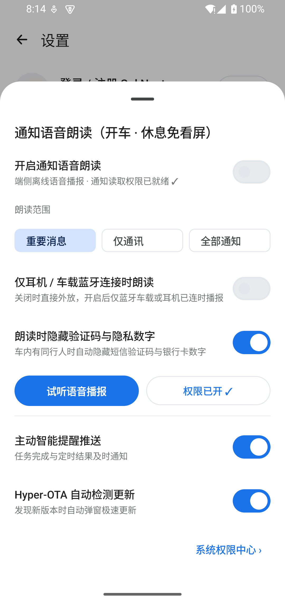
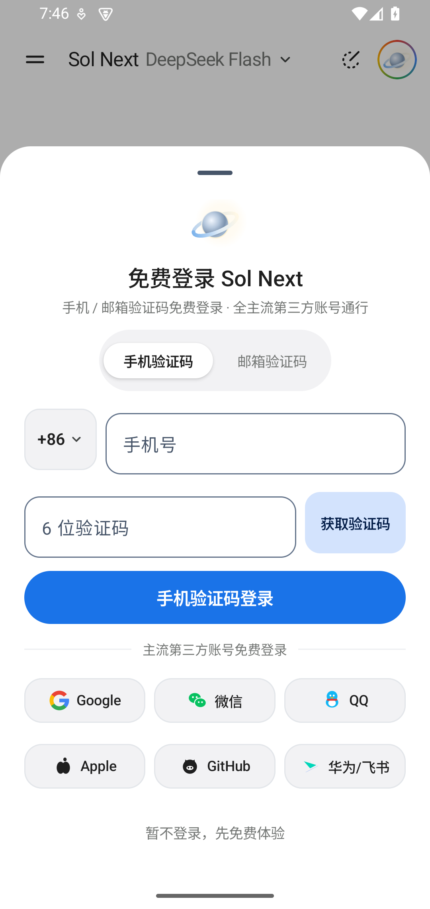

🎨 原生 Material 3 浅/深双模式
底部「对话 | 任务」悬浮胶囊与呼吸光晕，浅色 #FFFFFF / 深色 #0E0F11 全站 120Hz 自适应，支持左上角热切 DeepSeek Flash / Pro、BYOK 与 OpenRouter PKCE 订阅 OAuth。

原生 Android Material 3「对话 | 任务」流体双模式 · 免费内置 DeepSeek Flash 与 Brave Search 实时联网搜索 · 四级端侧实时神经语音零配置即用 · 后台独立虚拟屏替你办事 · 开车免看屏通知语音朗读。
底部「对话 | 任务」悬浮胶囊与呼吸光晕，浅色 #FFFFFF / 深色 #0E0F11 全站 120Hz 自适应，支持左上角热切 DeepSeek Flash / Pro、BYOK 与 OpenRouter PKCE 订阅 OAuth。
Rust 加密保险库内置 Brave Search API，日常对话询问实时资讯/天气/价格与多跳深度研究自动联网检索附来源；国内直连环境自动 2.5s 无缝降级兜底。
APK 内置 GTCRN 降噪 + Silero VAD v5 + Zipformer-CTC + AISHELL-3 VITS，免配任何云端语音 API，统一驱动 Live 实时语音与 AI 智能接打电话。
离线自动播报微信/短信/重要通知，播报时自动短暂压低音乐音量（Audio Ducking），默认隐藏短信验证码与银行卡隐私数字，支持仅蓝牙车载/耳机模式。
任务模式自动在应用内拉起后台独立虚拟屏并隔离副屏输入法（DISPLAY_IME_POLICY_HIDE），主屏打字不断流；彻底优化国产 ROM 退出后反复提示无障碍。
免费手机/邮箱验证码登录 + Google/微信/QQ/Apple/GitHub/华为飞书主流登录，全部凭证与本地记忆通过 Android Keystore AES-256-GCM 硬件加密存储。

浅色极简主页对话 | 任务 悬浮胶囊
深色模式富文本纯黑自适应护眼排版
任务模式虚拟屏后台独立运行不收键盘
端侧 Live 实时语音四级神经引擎免配 API
通知语音朗读压低音乐 · 隐藏验证码
免费全渠道登录手机/邮箱/谷歌/微信/QQSigning Cert SHA-256: d7a6fed0ff42843a20329944f2b1741060048610546df6cf2ad8179cfe335478 Sol-Next-v9.2.0-public-arm64.apk : 398145f17f1cb17b228aeae6bb94b9d0e47320cc6ffd76afff6b511dbfc6305f Sol-Next-v9.2.0-public-universal.apk : 5d721c2681b755df415bd167ea6276ffa5c77ff48a3c40268f09c4cd1b6b796e